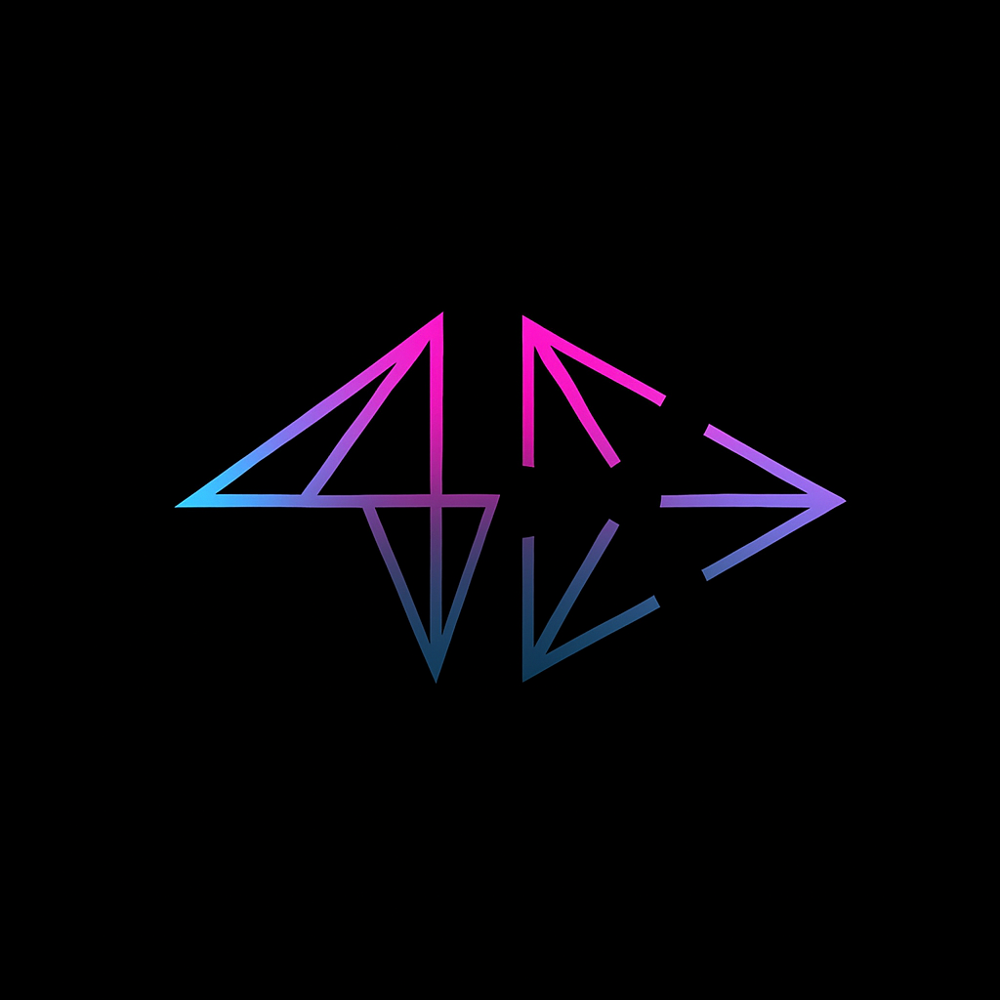
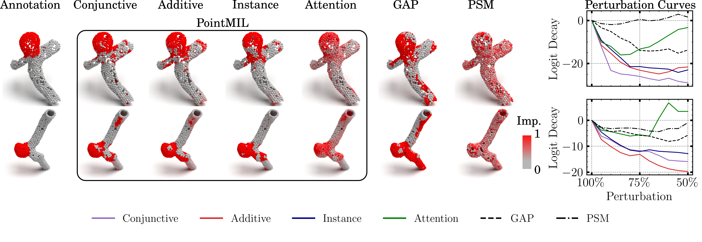
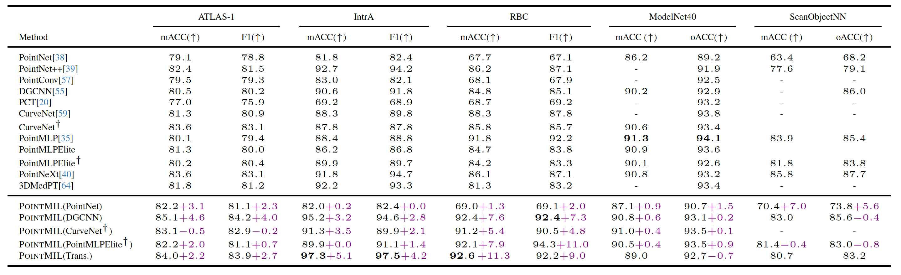
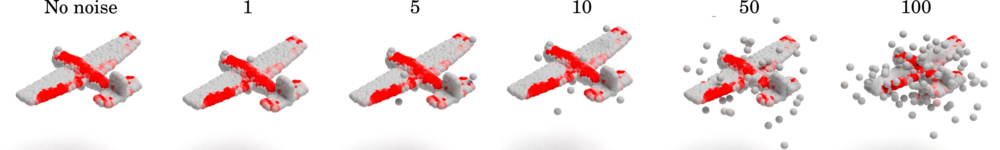

Interpretable Point-Cloud Classification using Multiple Instance Learning
ICCV 2025 Highlight
Three‑dimensional point clouds are ubiquitous in science and industry, yet many state‑of‑the‑art classifiers behave as opaque black boxes. PointMIL introduces an inherently interpretable framework that leverages multiple instance learning (MIL) to jointly improve accuracy and provide fine‑grained, point‑level explanations.

Interactive demo
Load a sample point cloud and visualise PointMIL's point-level importance (gray → red). Toggle class, palette, and thresholds. Drop your own .json files that follow the schema below.
Controls
{ points: [[x,y,z],...], classes: ["..."], scores: { "Class A": [0..1 per point], ... } }
PointMIL in a nutshell
Overview
Innovation
Details
Capabilities
🔮 Method Overview
PointMIL is an inherently interpretable framework for point-cloud classification. We treat each point cloud as a bag of instances and learn to aggregate evidence with Multiple Instance Learning (MIL). Unlike post-hoc saliency, PointMIL’s pooling mechanism yields point-level importance as part of the forward pass, so explanations are aligned with the model’s actual decision rule.

- Backbones: works with standard point-based classifiers (e.g., PointNet, DGCNN, CurveNet).
- MIL Pooling: Instance / Attention / Additive / Conjunctive variants.
- Outputs: class probabilities + calibrated point-level importance per class.
💡 Key Innovation
We unify popular point-cloud feature extractors with MIL pooling to make interpretability structural, not post-hoc. The pooling layer acts as a transparent evidence combiner, so the same scores that drive the prediction also surface the discriminative regions.
- Inherent interpretation: importance = contribution used in the decision, no surrogate maps.
- Pooling family: swap-in choices (Instance, Attention, Additive, Conjunctive) balance sparsity, stability, and context-sharing.
🛠️ Algorithm Details
Let \( \mathbf{P}=\{\mathbf{p}_i\}_{i=1}^N \subset \mathbb{R}^3 \) with features \( \mathbf{F}=\{\mathbf{f}_i\}_{i=1}^N \in \mathbb{R}^{d_{\text{in}}} \). A point encoder \( f_{\text{enc}} \) yields per-point embeddings \( \mathbf{z}_i \in \mathbb{R}^d \). An MIL head \( f_{\text{MIL}} \) aggregates them into bag-level logits \( \hat{\mathbf{Y}} = f_{\text{MIL}}(\{\mathbf{z}_i\}_{i=1}^N) \in \mathbb{R}^c \), where \( f_{\text{MIL}} \in \{\text{Instance},\text{Attention},\text{Additive},\text{Conjunctive}\} \).
Instance pooling
Classify each point, then average the per-point predictions to get the bag prediction. This assigns per-point responsibility transparently.
Attention pooling
Learn attention weights over points, pool a weighted feature, then classify the pooled feature.
Additive pooling
Weight each point’s features, classify each weighted point, then average the per-point predictions.
Conjunctive pooling
Learn attention and classification heads independently on features; combine by a weighted mean of per-point predictions.
Contextual attention (smoothing)
Attention can be sparse; we smooth weights by averaging over each point’s local neighborhood, improving coverage of discriminative regions.
Interpretability
For Instance, point-level scores come directly from per-point logits: \( \{\hat{\mathbf{y}}_i\}_{i=1}^N \). Additive and Conjunctive scale these by attention: \( \{ a_i\,\hat{\mathbf{y}}_i \}_{i=1}^N \). We apply softmax over classes and read the target class component to get a scalar per point. For Attention, the weights \( \mathbf{a}=\{a_i\}_{i=1}^N \) provide non–class-specific importance.
💎 Results & Capabilities
Interpretability
PointMIL delivers competitive or state-of-the-art accuracy while providing faithful point-level explanations on datasets such as IntrA, RBC, ModelNet40, and drug-response 3D phenotypes.



- Faithful: explanations are produced by the decision mechanism itself.
- Granular: per-class importance enables side-by-side comparisons across hypotheses.
- Practical: simple thresholds produce clean, reviewer-friendly overlays for QA and error analysis.
Usage in the Demo
The web demo loads a point cloud, selects a class, and shades points by MIL importance (gray→red). Use the “High: Spheres + shadows” mode to match our publication figures and rotate the scene interactively.
✅ Conclusion
PointMIL makes point-cloud classification interpretable by design, unifying common backbones with transparent MIL pooling. The same mechanism that predicts the class reveals where the model looked, enabling reliable inspection, error analysis, and communication in scientific and industrial settings.